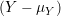
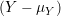

Algorithm 1: DG ( Duality Gap )
Input:
 The design matrix
The design matrix  The vector of predictors
The vector of predictors  Current
Current  Grid element
Grid element  Primal Objective function
Primal Objective function  Dual Point
Dual Point  Dual Objective function
The design matrix The vector of predictors Current Grid element Primal Objective function Dual Point Dual Objective function
Dual Objective function
The design matrix The vector of predictors Current Grid element Primal Objective function Dual Point Dual Objective function
 …
…  …
…  Number of rows in the design matrix
Number of rows in the design matrix  The design matrix
The design matrix  The vector of predictors
The vector of predictors  Current
Current  The design matrix
The design matrix  The vector of predictors
The vector of predictors  The
The  The
The  The current Lipschitz constant, as computed by backtracking line search
The current Lipschitz constant, as computed by backtracking line search  An arbitrary matrix
An arbitrary matrix  The thresholding parameter
The thresholding parameter  Make a copy of
Make a copy of 


 The design matrix
The design matrix  The vector of predictors
The vector of predictors  Starting vector
Starting vector  Initial Lipschitz constant, used by backtracking line search
Initial Lipschitz constant, used by backtracking line search  Grid element
Grid element  Step size when updating Lipschitz constant
Step size when updating Lipschitz constant  Duality gap target
Duality gap target  Make a copy of
Make a copy of 


 )
) 

 Update
Update  The design matrix
The design matrix  The vector of predictors
The vector of predictors  Starting vector
Starting vector  Grid element
Grid element  Duality gap target
Duality gap target 
 Make a copy of
Make a copy of 
 Scale grid element by norm of the i’th column of design matrix
Scale grid element by norm of the i’th column of design matrix  Take all columns of design matrix not equal to
Take all columns of design matrix not equal to 

 Take all elements of predictors vectors not equal to
Take all elements of predictors vectors not equal to  Compute the scaled residual
Compute the scaled residual 
 Update the i’th element of Beta
Update the i’th element of Beta 

 The design matrix
The design matrix  The vector of predictors
The vector of predictors  Starting vector
Starting vector  Grid element
Grid element  Duality gap target
Duality gap target 
 Make a copy of
Make a copy of 
 Initialize Intermediary Residual
Initialize Intermediary Residual  Scale grid element by norm of the i’th column of design matrix
Scale grid element by norm of the i’th column of design matrix 
 Update the i’th element of Beta
Update the i’th element of Beta 


 The standardized = 0
The standardized = 0 The vector of predictors
The vector of predictors  Starting vector
Starting vector  Grid element
Grid element  Duality gap target
Duality gap target 
 Make a copy of
Make a copy of  Scale grid element by norm of the i’th column of design matrix
Scale grid element by norm of the i’th column of design matrix  Take all columns of design matrix not equal to
Take all columns of design matrix not equal to 

 Take all elements of predictors vectors not equal to
Take all elements of predictors vectors not equal to  Compute the scaled residual
Compute the scaled residual 
 Update the i’th element of Beta
Update the i’th element of Beta 

The next algorthim is a modified version of Coordinate Descent that seeks to reduce redunant computations as much as possible. This algorthim relies on the fact that many computation required by Coordinate Descent can be broken up into constant and non-constant parts. The constant parts of the computation can be performed ahead of time and stored for later use.
Of particular note is the scaled residual computation, which when written down naively reads:
Which we can re-write as,

Note that since the design matrix
Note for this algorthim we establish the convention that array of a given data type will be declared as follows:
(
As an example an array of real numbers numbers of size
(
 The design matrix
The design matrix  The vector of predictors
The vector of predictors  Starting vector
Starting vector  Grid element
Grid element  Duality gap target
Duality gap target  Initialize array of size p to hold threshold parameters
Initialize array of size p to hold threshold parameters  Blank array for part of residual computation
Blank array for part of residual computation  Blank array to row vectors of size p which will be used for part of residual computation
Blank array to row vectors of size p which will be used for part of residual computation 

 Make a copy of
Make a copy of 

 Copy all of beta expect i’th element which is assigned to 0
Copy all of beta expect i’th element which is assigned to 0  Compute the scaled residual
Compute the scaled residual  Compute threshold parameter
Compute threshold parameter 
 Update the i’th element of Beta
Update the i’th element of Beta 

 The design matrix
The design matrix  The vector of predictors
The vector of predictors  Starting vector
Starting vector  Initial Lipschitz constant, used by backtracking line search
Initial Lipschitz constant, used by backtracking line search  Grid element
Grid element  Step size when updating Lipschitz constant
Step size when updating Lipschitz constant  Duality gap target
Duality gap target  Beta vector from previous iteration of FISTA
Beta vector from previous iteration of FISTA  Intermediary vector from previous iteration of FISTA
Intermediary vector from previous iteration of FISTA 

 (
(

 ))
))  The design matrix
The design matrix  The vector of predictors
The vector of predictors  The number of grid elements required
The number of grid elements required  Initialize empty array of size M
Initialize empty array of size M  Compute linear step
Compute linear step  Convert to logarithmic step
Convert to logarithmic step  The design matrix
The design matrix  The vector of predictors
The vector of predictors  Current grid element
Current grid element  Vector of grid elements
Vector of grid elements  Vector of grid elements
Vector of grid elements  Betas matrix
Betas matrix  The design matrix
The design matrix  The vector of predictors
The vector of predictors  Starting vector
Starting vector  Initial Lipschitz constant, used by backtracking line search
Initial Lipschitz constant, used by backtracking line search  Number of grid elements
Number of grid elements  Step size when updating Lipschitz constant
Step size when updating Lipschitz constant  .
.  Normalize X to mean 0 and standard deviation 1.
Normalize X to mean 0 and standard deviation 1.  .
.  Normalize Y.
Normalize Y.  Initialize grid elements
Initialize grid elements  Initialize matrix of Betas to zero matrix
Initialize matrix of Betas to zero matrix 
 Initialize old beta vector with the k - 1’th Column of the Betas matrix.
Initialize old beta vector with the k - 1’th Column of the Betas matrix.  Extract the k’th grid element.
Extract the k’th grid element.  The design matrix
The design matrix  The vector of predictors
The vector of predictors  Current
Current  Grid element
Grid element  The design matrix
The design matrix  The vector of predictors
The vector of predictors  Current primal point
Current primal point  Current dual point
Current dual point  Grid element
Grid element  Primal Objective function
Primal Objective function  Dual Objective function
Dual Objective function
 The design matrix
The design matrix  Center of the ball
Center of the ball  Radius of the ball
Radius of the ball  Initialize Active Set With Empty Set
Initialize Active Set With Empty Set  The design matrix
The design matrix  Starting vector
Starting vector  Grid element
Grid element  Duality gap target
Duality gap target 
 Make a copy of
Make a copy of 
 Initialize Intermediary Residual
Initialize Intermediary Residual  Initialize Active Set
Initialize Active Set 
 Dual point
Dual point 
 Duality gap
Duality gap  Safe Active Set
Safe Active Set  Scale grid element by norm of the i’th column of design matrix
Scale grid element by norm of the i’th column of design matrix 

 Update the i’th element of Beta
Update the i’th element of Beta 


 Set to 0 coefficients not in
Set to 0 coefficients not in 
Note that Algorithm 18 solves the problem
|
| (1) |
 The design matrix
The design matrix  The vector of predictors
The vector of predictors  Number of grid elements
Number of grid elements 
 Normalize X to mean 0 and standard deviation 1.
Normalize X to mean 0 and standard deviation 1. 
 Normalize Y.
Normalize Y. 
 Initialize grid elements
Initialize grid elements  Initialize matrix of Betas to zero matrix
Initialize matrix of Betas to zero matrix  Duality gap target
Duality gap target